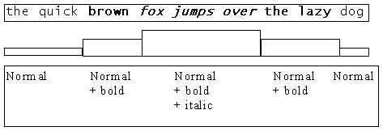
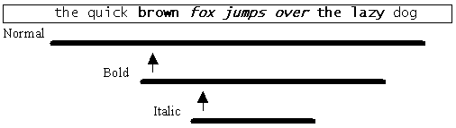
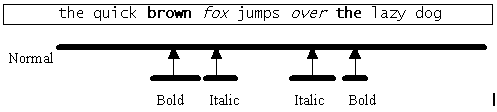

|
| |
The Symbian OS uses the principle of format layering in which new formatting is added as a layer onto the previous layer of formatting. The following diagram shows a less efficient technique for applying format layering to text. The inefficiency arises because each format layer stores not only the new attribute which it introduces, but also every attribute which it inherits from the preceding format layer.

The Symbian OS avoids this inefficiency by using the system of based-on links. Here, each new layer adds attributes in a natural way without restating all attributes previously set. A based-on link is a pointer to the format layer whose attributes are inherited by another layer. For example, when the italic attribute is applied to a region of bold text, the new layer stores only the italic attribute and a pointer to the previous attribute layer. Chains of format layers can thus be formed, with each layer based on the previous one. In order to determine a character or paragraph’s effective format, a chain of format layers must typically be examined. The final layer in the chain of based on links is the one whose based on link is NULL and is not therefore based upon any other layer.
This method is demonstrated in the following two diagrams, in which each arrow represents a based-on link.

Format layering
The following diagram demonstrates the system of based-on links when attributes are applied to different parts of text rather than added on top of existing attribute layers.

In this case, several format layers are required, all of which are based on the normal layer.
Copyright ©2002 Symbian Ltd. 6.1-00174 |
|